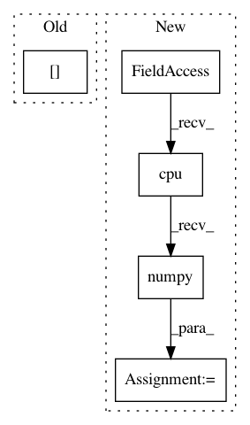

f98bd2ec9d4289939ff6661d5a9c43ee7e8996f7,models/shared_rnn.py,RNN,forward,#RNN#,195
Before Change
norm = norm.unsqueeze(-1)
detached_norm = torch.autograd.Variable(norm.data,
requires_grad=False)
hidden[hidden_norms > max_norm] *= max_norm/detached_norm
logits.append(logit)
h1tohT.append(hidden)
After Change
// This workaround for PyTorch v0.3.1 does everything in numpy,
// because the PyTorch slicing and slice assignment is too
// flaky.
hidden_norms = hidden_norms.data.cpu().numpy()
clipped_num += 1
if hidden_norms.max() > max_clipped_norm:
max_clipped_norm = hidden_norms.max()
clip_select = hidden_norms > max_norm
clip_norms = hidden_norms[clip_select]
mask = np.ones(hidden.size())
normalizer = max_norm/clip_norms
normalizer = normalizer[:, np.newaxis]
In pattern: SUPERPATTERN
Frequency: 4
Non-data size: 5
Instances
Project Name: carpedm20/ENAS-pytorch
Commit Name: f98bd2ec9d4289939ff6661d5a9c43ee7e8996f7
Time: 2018-03-11
Author: dukebw@mcmaster.ca
File Name: models/shared_rnn.py
Class Name: RNN
Method Name: forward
Project Name: leftthomas/SRGAN
Commit Name: 14c0cf773f514788aca6b935298fa186890eecc1
Time: 2017-11-21
Author: leftthomas@qq.com
File Name: test.py
Class Name:
Method Name:
Project Name: interactiveaudiolab/nussl
Commit Name: dc3462d4f4fe48bc075b48815d026dc4a8acceb7
Time: 2019-07-19
Author: prem@u.northwestern.edu
File Name: nussl/separation/clustering/clustering_algorithms.py
Class Name: DeepClustering
Method Name: extract_features
Project Name: hunkim/PyTorchZeroToAll
Commit Name: c4610ff26a01a0622bc11dcac0f0812f05c56e0c
Time: 2017-11-02
Author: hunkim@gmail.com
File Name: 12_4_name_classify.py
Class Name: RNNClassifier
Method Name: forward